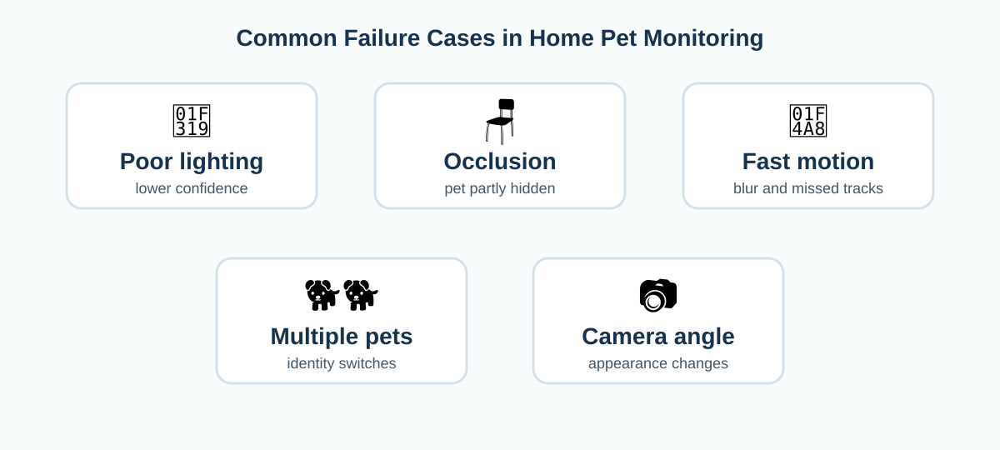

Successes, Challenges, and Limitations
Research results show that pet detection, tracking, and behavior recognition are possible, but a home system still has to deal with uncontrolled lighting, furniture, camera angle, fast movement, similar-looking pets, and limited computing power.

Poor lighting and environmental change
Object detectors depend on visible image features. Low luminance, indoor conditions, and other environmental changes can reduce confidence or cause missed detections. In a 2025 intrusion-detection study, Sodhro, Kannam, and Jensen compared YOLOv5 and YOLOv8 across indoor, outdoor, luminance, and simulated weather conditions and found that performance changed with the environment.[9] Although their target was human intrusion rather than pets, the result is relevant because the same basic problem occurs when a home camera receives darker or noisier images.
Occlusion
Furniture, people, blankets, tables, and doorways can hide part or all of a pet. Detection can fail, and tracking can temporarily lose the track. If the pet reappears, the tracker may assign a new ID. This is especially important if the system is measuring how long the pet stayed in a restricted area.
Multiple pets and identity switches
Two dogs or cats can look very similar. If they cross paths, a tracker may swap their IDs. The domestic-cat tracking study by Nakajima and colleagues is useful here because it specifically considers multiple animals and shows that fine-tuning on pet-specific data can improve tracking.[3]
Breed, size, and posture variation
Dogs vary strongly in size, coat, body proportions, and behavior. A model trained on one breed or a small number of animals may not generalize to all pets. Kim and Moon note that their study used one dog and that future data collection should include breed and size variation.[4] This is an important limitation when interpreting reported accuracy.
Camera angle and zone calibration
A virtual polygon is defined in image coordinates. If the camera is moved, bumped, zoomed, or rotated, the polygon no longer represents the same physical place. A practical app should therefore include an easy zone-calibration step and perhaps save different zones for different cameras.
Real-time processing on mobile or edge devices
A complete system may run detection, tracking, behavior recognition, drawing, event logging, and notifications. These tasks compete for CPU/GPU power, memory, and battery. A small detector may be faster but less accurate; a larger model may be more accurate but too slow for a phone or low-cost edge computer. The application therefore needs to choose a model size and frame rate that match the device.
False alerts
A one-frame rule can create unnecessary notifications. A pet might touch the boundary for a moment, or a bounding box might jump because of tracking noise. Dwell time, cooldown periods, and track history can make the alert logic more stable. However, longer dwell thresholds can also delay important alerts, so the threshold should depend on the risk of the area.
Privacy
Indoor cameras may capture people, conversations, or private living spaces. A privacy-aware implementation should process video locally when possible, minimize saved footage, clearly indicate when the camera is active, and avoid retaining more data than the feature needs.
Future research
Smaller models
Use lightweight detection, tracking, and temporal models for phones, Raspberry Pi, or other edge devices.
Pet-specific fine-tuning
Adapt general models using more breeds, camera angles, lighting conditions, and multi-pet scenes.
Pose and segmentation
Use pet keypoints or masks instead of only bounding boxes to estimate body position more precisely.
Adaptive alerts
Combine location, dwell time, behavior, time of day, and owner preferences to reduce unnecessary notifications.